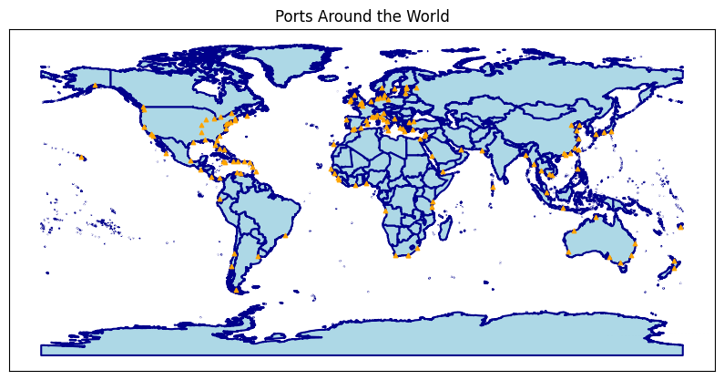

LinkedIn: A Glimpse Into The Job Market
LinkedIn as a pivotal platform where companies and individuals seeking connections and job opportunities. Many of college students have faced certain difficulties with being hired and in career progression. My teammates and I felt that exploring data on LinkedIn could help to provide insight not only to the topic as a whole, but on a professional level as well. Analyzing this data will give us an idea of what the job market really looks like and how one might be able to navigate it more effectively. For our team project, we utilized Google Drive and GitHub as our collaboration platforms. The website was developed from the ground up. The final product incorporates HTML, CSS, JavaScript, and Python.
Besides, DS4200 Information Presentation & Visualization, as one of my favorite college classes, taught me not only how to build incredible interactive visuals and websites that are communicative and succinct, but also how to find right places to search for possible datasets. To demostrate the point, I also attached two other works to show the practicality of the class.
Final website delivery
Texas population and unemployment choropleth map by FIPS
I created an interactive map of Texas using folium library. By converting population and unemployment data by county into a geographic format with Federal Information Processing Standards code (similar to the function of zip code) and adding layer filters, I visualized these metrics with color-coded choropleth maps.
Worldwide port map
I used GeoPandas to load geographical data for countries and ports from shapefiles (a geospatial vector data format for geographic information system (GIS) software). Using Matplotlib, I created a plot showing countries in light blue and ports as orange triangles.
